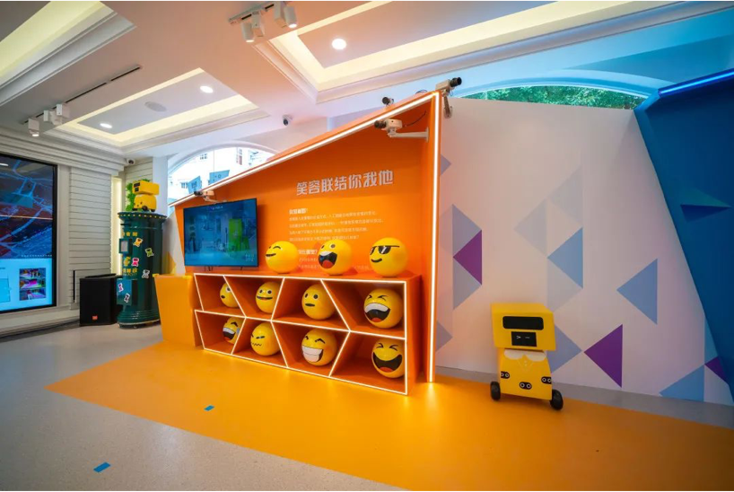

Transform cutting-edge artificial intelligence technology into an interactive experience exhibition that is easy to understand and resonate with children
Project Info
July.2020 - Sep. 2020
YITU Tech, Shanghai & Hangzhou
Tools
Wekinator, Python- Machine
Learning Demo
Sketch, Principle - APP Interface & Interaction
Role & Teammates
Research, Concept Generation
Prototyping
Innovation Team Projects
Overview
The seemingly simple jigsaw puzzle, driven by the human imagination, can be put together more than 1600 kinds of graphics, just as artificial intelligence technology, and the integration of various industries, it can generate countless possibilities.
A small AI, with a tangram dream. Although AI is still in its infancy, it is learning at a rapid pace and growing along with humans. We transform cutting-edge AI technology into an interactive experience exhibition that is easy to understand and resonate with children, allowing visitors to get a closer look at the development history, scientific principles, future trends of AI as a national strategy, and the mutually reinforcing growth relationship between technology and human beings. Presenting AI technology from the perspective of observation, understanding, interaction, and connection, the exhibition allows the viewer to have a wonderful resonance with AI.
AI showroom digitization
Digitization has been called the "DNA of information". Relying on smart chips, computers can transform the world we live in into a measurable digital world, capturing all kinds of complex information that we cannot see with our naked eyes. When entering the exhibition hall, the big screen can analyze the visitors' location information, gender and age in real time.
Smiles connect you and me

Expressions are an important form of human communication. Artificial intelligence will observe the changes of your expressions, and when you show a smile, it knows you are happy. By capturing the smiling expressions of visitors to the exhibition, it randomly creates a living and breathing expression package.
How similar are you guys?
One out of every 100 million people looks highly similar to you. China's current population is about 1.4 billion, which means there are more than 10 people who look almost identical to you! Subtle differences that even mom and dad may not be able to distinguish can be detected by the machine. Discerning the similarity of the viewer's appearance through sophisticated recognition of the face.
AI Partner QiQi
The concept of robots first originated in ancient Greece. In the Western Zhou Dynasty in China, there were also ingenious craftsmen who made wooden robots that could "sing and dance". With the rapid development of artificial intelligence, robots are becoming more and more intelligent and are widely used in various industries; the AI robot Qiqi can have simple conversations with small audiences and take pictures of them.
Learn Dancing Together
Machine vision algorithms can detect the 17 human sampling points that are most effective for judging complex movements, and artificial intelligence uses this to recognize your movements in real time.
Time Printer
Initially, speech recognition technology could only recognize 10 alphanumeric digits. Now, the machine can not only understand our words, but also translate directly into multiple languages, allowing people to communicate easily all over the world. Through natural voice recognition, the printer can convert the visitor's message into a QR code to print on a postcard, becoming a message of time left for the future.